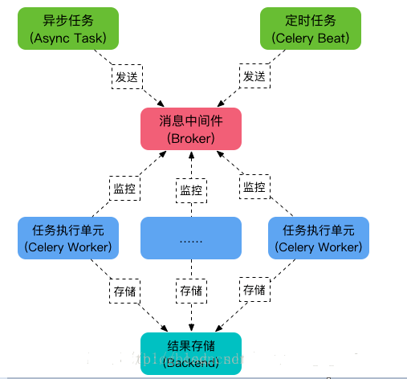
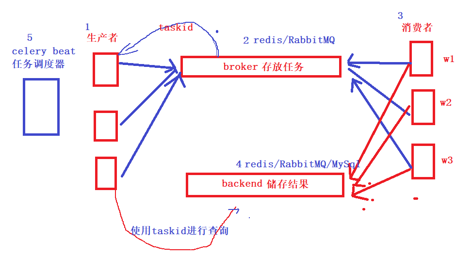

我们自己画图才能理解的更加透彻

celery配置与基本使用
安装celery
pip install celery==5.0.0新建celery/main.py
# celery_task/main.py
import os
from celery import Celery
# 定义celery实例, 需要的参数, 1, 实例名, 2, 任务发布位置, 3, 结果保存位置
app = Celery('mycelery',
broker='redis://127.0.0.1:6379/14', # 任务存放的地方
backend='redis://127.0.0.1:6379/15') # 结果存放的地方
@app.task
def add(x, y):
return x + y启动celery
'''1.启动celery'''
#1.1 单进程启动celery
celery -A main worker -l INFO
#1.2 celery管理
celery multi start celery_test -A celery_test -l debug --autoscale=50,5 # celery并发数：最多50个，最少5个
ps auxww|grep "celery worker"|grep -v grep|awk '{print $2}'|xargs kill -9 # 关闭所有celery进程在django项目中使用 celery
1.在做celery异步任务和定时任务时，有些人使用django-celery+django-redis+celery+redis+django-celery-beat实现
2.但是这种实现方法和django结合过于紧密，不利于分布式部署
3.而且不同版本相结合,一旦不小心安装升级一个包，会导致各种报错
4.配置也比较繁琐，很多同学在使用时易出错
2、安装相关包
pip install Django==2.2
pip install celery==4.4.7
pip install redis==3.5.31.2 celery基本使用
1、创建tasks.py文件进行验证
tasks.py
1、***启动Celery Worker***来开始监听并执行任务
celery -A tasks worker –loglevel=info # tasks是tasks.py文件：必须在tasks.py**所在目录下执行
2、调用任务：再打开两个终端，进行命令行模式，调用任务
>>> import tasks
>>> import tasks
>>> t2 = tasks.minus.delay(9,11)
**#**然后在另一个终端重复上面步骤执行
>>> t1 = tasks.add.delay(3,4)
>>> t1.get() *#由于t2执行sleep了3s所以t1.get()*需要等待
2、celery其他命令
>>> t.ready() *#返回true*证明可以执行，不必等待
>>> t.get(timeout=1) *#如果1秒不返回结果就超时,*避免一直等待
>>> t.get(propagate=False) *#*如果执行的代码错误只会打印错误信息
>>> t.traceback #打印异常详细结果
1.2 在django项目中使用
1、目录结构如下
celery_tasks（目录）
- __init__.py
- celery.py
- tasks.py
2、opwf_project/celery_tasks文件夹
celery.py
"""
author:翔翔
date:
use:
"""
# celery.py
# -*- coding: utf-8 -*-
from celery import Celery
import os
import sys
import django
# 1.添加django项目根路径
CELERY_BASE_DIR = os.path.dirname(os.path.abspath(__file__))
sys.path.insert(0, os.path.join(CELERY_BASE_DIR, '../opwf'))
# 2.添加django环境
os.environ.setdefault("DJANGO_SETTINGS_MODULE", "opwf.settings")
django.setup() # 读取配置
# 3.celery基本配置
app = Celery('proj',
broker='redis://localhost:6379/14',
backend='redis://localhost:6379/15',
include=['celery_tasks.tasks',
])
# 4.实例化时可以添加下面这个属性
app.conf.update(
result_expires=3600, # 执行结果放到redis里，一个小时没人取就丢弃
)
# 5.配置定时任务：每5秒钟执行 调用一次celery_pro下tasks.py文件中的add函数
app.conf.beat_schedule = {
'add-every-5-seconds': {
'task': 'celery_task.tasks.test_task_crontab',
'schedule': 5.0,
'args': (16, 16)
},
}
# 6.添加时区配置
app.conf.timezone = 'UTC'
if __name__ == '__main__':
app.start()tasks.py
"""
author:翔翔
date:
use:
"""
# -*- coding:utf8 -*-
from .celery import app # 从当前目录导入app
import os, sys
from .celery import CELERY_BASE_DIR
# 1.test_task_crontab测试定时任务
@app.task
def test_task_crontab(x, y):
# 添加django项目路径
sys.path.insert(0, os.path.join(CELERY_BASE_DIR, '../opwf'))
from utils.rl_sms import test_crontab
res = test_crontab(x, y)
return x + y
# 2.测试异步发送邮件
@app.task(bind=True)
def send_sms_code(self, mobile, datas):
sys.path.insert(0, os.path.join(CELERY_BASE_DIR, '../opwf'))
# 在方法中导包
from utils.rl_sms import send_message
# time.sleep(5)
try:
# 用 res 接收发送结果, 成功是:０， 失败是：－１
res = send_message(mobile, datas)
except Exception as e:
res = '-1'
if res == '-1':
# 如果发送结果是 -1 就重试.
self.retry(countdown=5, max_retries=3, exc=Exception('短信发送失败'))3、opwf_project/opwf/utils
rl_sms.py
# -*- coding: utf-8 -*-
# utils/rl_sms.py
from ronglian_sms_sdk import SmsSDK
from user.models import User
accId = '8a216da8747ac98201749c0de38723b7'
accToken = '86072b540b4648229b27400414150ef2'
appId = '8a216da8747ac98201749c0de45123be'
def send_message(phone, datas):
user = User.objects.all()[0]
print(user.username, '%%%%%%%%%%%%%%%%%%%%%%%%%%%%%%%%%%%%%%%')
sdk = SmsSDK(accId, accToken, appId)
tid = '1' # 测试模板id为: 1. 内容为: 【云通讯】您的验证码是{1}，请于{2}分钟内正确输入。
# mobile = '13303479527'
# datas = ('666777', '5') # 模板中的参数按照位置传递
# resp = sdk.sendMessage(tid, phone, datas)
print("##########################################")
print('执行了这个方法 send_message')
return ''
def test_crontab(x,y):
print('############### 执行test_crontab测试任务 #############')
print('############### 邮件审批超时提醒 #############')4、在django项目中调用
def handle_next_suborder_approve(suborder_obj):
# 函数内部导报
from celery_task import tasks
# .delay()发送异步任务
tasks.send_sms_code.delay(18538752511,()) # 通知审判者5、执行命令
### 1.1 进入执行目录
cd opwf_project
### 1.2 celery管理
celery -A celery_tasks worker -l INFO # 单线程
celery multi start w1 w2 -A celery_pro -l info #一次性启动w1,w2两个worker
celery -A celery_pro status #查看当前有哪些worker在运行
celery multi stop w1 w2 -A celery_pro #停止w1,w2两个worker
# 1.项目中启动celery worker
celery multi start celery_tasks -A celery_task -l debug --autoscale=50,10 # celery并发数：最多50个，最少5个
# 2.在项目中关闭celery worker
ps auxww|grep "celery worker"|grep -v grep|awk '{print $2}'|xargs kill -9 # 关闭所有celery进程
```
### 1.3 django_celery_beat管理
# 1.普通测试启动celery beat
celery -A celery_tasks beat -l info
# 2.在项目中后台启动celery beat
celery -A celery_tasks beat -l debug >> /aaa/Scheduler.log 2>&1 &
# 3.停止celery beat
ps -ef | grep -E "celery -A celery_tests beat" | grep -v grep| awk '{print $2}' | xa
A celery_tasks beat -l info
# 2.在项目中后台启动celery beat
celery -A celery_tasks beat -l debug >> /aaa/Scheduler.log 2>&1 &
# 3.停止celery beat
ps -ef | grep -E "celery -A celery_tests beat" | grep -v grep| awk '{print $2}' | xacelery实现定时推送
环境配置
Django 2.2
django-celery-beat 2.1.0
celery 4.4.7celery 定期任务中文手册
https://www.celerycn.io/yong-hu-zhi-nan/ding-qi-ren-wu-periodic-tasksfrom celery import Celery
from celery.schedules import crontab
app = Celery()
@app.on_after_configure.connect
def setup_periodic_tasks(sender, **kwargs):
# Calls test('hello') every 10 seconds.
sender.add_periodic_task(10.0, test.s('hello'), name='add every 10')
# Calls test('world') every 30 seconds
sender.add_periodic_task(30.0, test.s('world'), expires=10)
# Executes every Monday morning at 7:30 a.m.
sender.add_periodic_task(
crontab(hour=7, minute=30, day_of_week=1),
test.s('Happy Mondays!'),
)
@app.task
def test(arg):
print(arg)settings下缓存配置
# 缓存配置
CACHES = {
# django存缓默认位置,redis 0号库
# default: 连接名称
"default": {
"BACKEND": "django_redis.cache.RedisCache",
"LOCATION": "redis://127.0.0.1:6379/0",
"OPTIONS": {
"CLIENT_CLASS": "django_redis.client.DefaultClient",
}
},
# django session存 reidis 1 号库（现在基本不需要使用）
"session": {
"BACKEND": "django_redis.cache.RedisCache",
"LOCATION": "redis://127.0.0.1:6379/1",
"OPTIONS": {
"CLIENT_CLASS": "django_redis.client.DefaultClient",
}
},
}在项目中创建celery_task文件
# 目录结构
- celery_task
- config.py #在config.py中编写配置代码
- main.py #在tasks.py中编写任务函数代码
- tasks.py #在main.py中调用任务,并实现定时任务功能celery_task/tasks.py
"""
author:翔翔
date:
use:
"""
from main import app
@app.task
def test(arg):
print(arg)
@app.task(bind=True)
def add(self, x, y):
return x + ycelery_task/config.py
"""
author:翔翔
date:2020-12-07
use:配置celery
"""
# celery_task/main.py
import os
import sys
from celery import Celery
os.environ.setdefault('DJANGO_SETTINGS_MODULE', 'opwf.settings')
# 定义celery实例, 需要的参数, 1, 实例名, 2, 任务发布位置, 3, 结果保存位置
app = Celery('mycelery',
broker='redis://127.0.0.1:6379/14', # 任务存放的地方
backend='redis://127.0.0.1:6379/15') # 结果存放的地方
CELERY_BASE_DIR = os.path.dirname(os.path.abspath(__file__))
sys.path.insert(0, os.path.join(CELERY_BASE_DIR, '../opwf'))celery_task/main.py
import os
import sys
import time
from config import app, CELERY_BASE_DIR
from tasks import test
"""
'''1.启动celery'''
#1.1 单进程启动celery
celery -A main worker -l INFO
#1.2 celery管理
celery multi start celery_test -A celery_test -l debug --autoscale=50,5 # celery并发数：最多50个，最少5个
ps auxww|grep "celery worker"|grep -v grep|awk '{print $2}'|xargs kill -9 # 关闭所有celery进程
"""
# celery项目中的所有导包地址, 都是以CELERY_BASE_DIR为基准设定.
# 执行celery命令时, 也需要进入CELERY_BASE_DIR目录执行.
try:
@app.task(bind=True)
def send_sms_code(self, username, pk, email):
sys.path.insert(0, os.path.join(CELERY_BASE_DIR, '../opwf'))
# ['/home/worker/opwf_project/celery_task/../opwf'
# 在方法中导包
from utils.celery_email import send_email_task
time.sleep(1)
try:
# 用 res 接收发送结果, 成功是:０， 失败是：－１
res = send_email_task(username, pk, email)
except Exception as e:
print(e)
res = '-1'
if res == '-1':
# 如果发送结果是 -1 就重试.
self.retry(countdown=5, max_retries=3, exc=Exception('邮件发送失败'))
except Exception as e:
print(e)
"""
执行下面两条命令即可让celery定时执行任务了
1、 启动一个worker：在celery_pro外层目录下执行
celery -A main worker -l info
2、 启动任务调度器 celery beat
celery -A main beat -l info
3、执行效果
看到celery运行日志中每5秒回返回一次 add函数执行结果
"""
@app.on_after_configure.connect
def setup_periodic_tasks(sender, **kwargs):
# Calls test('hello') every 10 seconds.
sender.add_periodic_task(10.0, test.s('hello'), name='add every 10')
#设置时区
app.conf.timezone = 'Asia/Shanghai'执行下面两条命令即可让celery定时执行任务了


- Post link: https://yanxiang.wang/celery%E4%BD%BF%E7%94%A8%E5%BC%82%E6%AD%A5%E4%BB%BB%E5%8A%A1%E5%A4%84%E7%90%86%E4%BB%A5%E5%8F%8A%E5%AE%9A%E6%97%B6%E4%BB%BB%E5%8A%A1/
- Copyright Notice: All articles in this blog are licensed under unless otherwise stated.